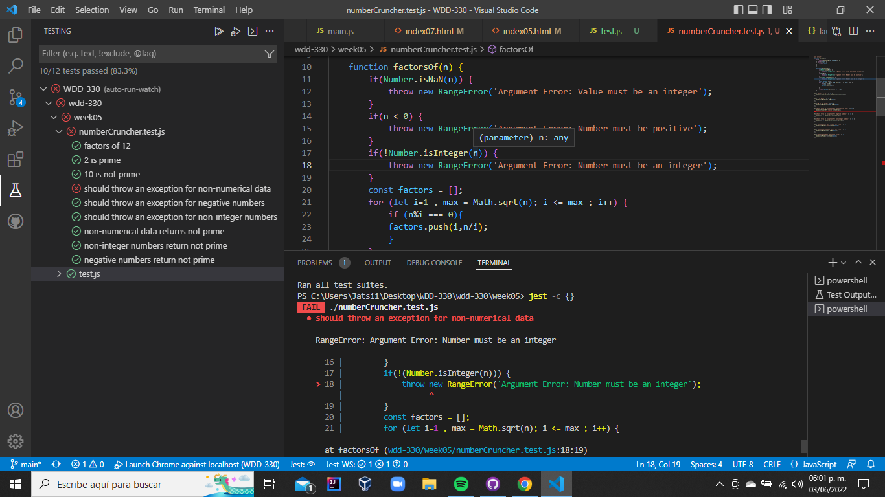

This week I did the test exercises from the book to understan how it works and how it is useful.
I learn that errors and bugs are always there and we need to have the ability of minimize, identify and deal with them.
I also learn how to use jest to test
The last test would have to pass all. I have reviewed the whole process and I can't find the reason why it doesn't throw the exception. Any ideas?
